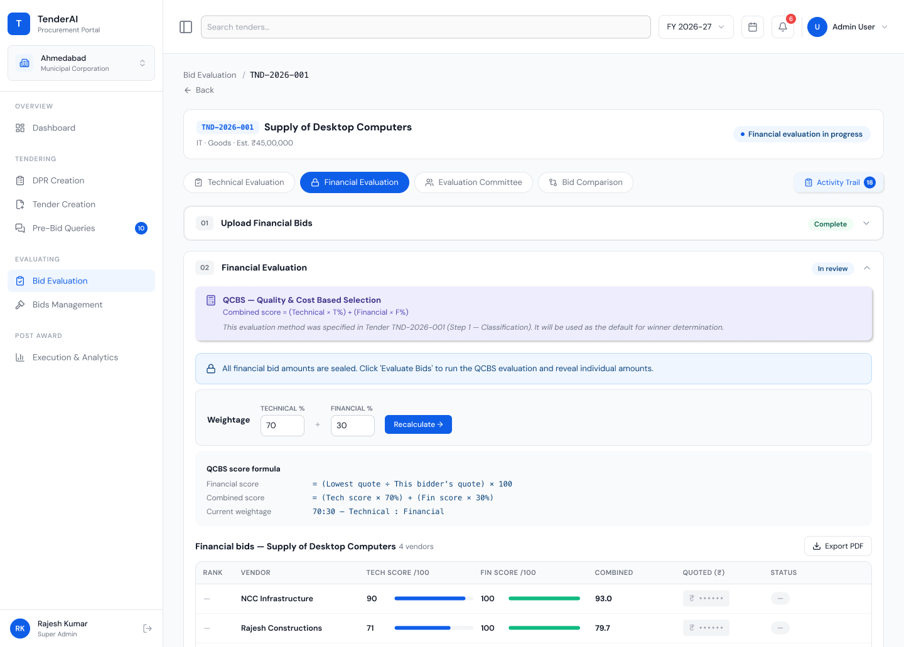

Tender Creation
A five-tab wizard (Classification → PQ/TQ → BOQ → Dates → CVC check), then one-way AI generation of a complete, ~100-page NIT. Change a value in conversation: Scribe applies it everywhere, summarises, confirms once.
Scribe drafts your NIT, runs the CVC pre-check, and tracks every approval. When the audit comes, your file is already ready.
Aligned with India's procurement framework
12+ departments, counter-signatures, re-submissions — weeks lost before one clause is approved.
The same question, a hundred phrasings — with no log of prior answers, one inconsistent reply can void the process.
Physical boxes, handwritten scores, no access log — one allegation of bias stalls the project and ends careers.
Miss one clause and the evaluation fails — or worse, succeeds only to be legally challenged months later.
Four vendors, four formats — comparison is ad-hoc, scoring undocumented, and no trail of who decided what.
Reference docs buried in drawers or officers' heads — when someone transfers, that knowledge leaves too.
From NIT creation to award letter — every step AI-assisted, officer-approved, and audit-ready.
Type your project scope in plain language. Scribe generates a complete, CVC-compliant NIT — section by section, with source citations and compliance checks built in.


AI clusters similar queries, drafts consistent responses, officer approves — done before lunch.




Every score, override, and award recommendation immutably logged. When the CAG arrives, you're already prepared — with a complete decision trail from first draft to final award.

Every stage connected, guided, and recorded. No more paper files jumping between departments.
Build the DPR with AI-suggested scope, BOQ, and a documented market-rate cost basis.
DPR CreationAI drafts a complete NIT, runs the CVC pre-check, refines by conversation.
Tender CreationAI clusters 200 vendor queries, drafts responses, issues corrigenda through approval chains.
Pre-bid QueriesPQ, technical, financial scoring with quotes masked until formally revealed. Committee signs, authority awards.
Bid EvaluationMilestone tracking, RA bills with auto-deductions, and full analytics from plan to payment.
ExecutionOfficers fill in what they know. Scribe fills in the rest: precedents, AI drafts, and compliance checks at every step.
Each module mirrors a real stage of the file: guided, documented, and connected to what comes next.
A five-tab wizard (Classification → PQ/TQ → BOQ → Dates → CVC check), then one-way AI generation of a complete, ~100-page NIT. Change a value in conversation: Scribe applies it everywhere, summarises, confirms once.
AI-suggested scope, BOQ and market-rate cost basis. The planning foundation that protects you in audit.
200 queries from 80 agencies, clustered by AI into 5–6 themes, responded to in 30 minutes.
PQ, technical and financial scoring across L1, QCBS, LCS, with quote amounts masked until formally revealed.
Comparative statement, committee recommendation, and LoA drafting — with authority workflows that keep the competent authority in control at every stage.
Milestone tracking with photo evidence. RA bills with automatic deductions: retention, TDS, GST TDS, LD.
No AI output hard-blocks a procurement action. Every compliance flag links directly to the field to fix. The decision, the signature, and the accountability stay with the officer and the competent authority.
Your tender data is confidential and contested. Scribe is built so the right people see the right things, and every critical action leaves an immutable record.
Officers, committee members, finance and authorities each see only what their role permits.
Confidential bid amounts stay hidden until formally revealed: a deliberate, two-step action.
Every action logged at DB level. No deletions, only appends. Super Admin surveillance view shows who touched what, and when.
No third-party AI API ever sees your data. Runs on MeitY-empanelled cloud within India. DPDP + IT Act compliant.
Designed to honour the norms officers are accountable to
No. Scribe is a co-pilot. It drafts, checks, and tracks; every compliance pointer is advisory, and all signings and approvals happen offline. The decision and accountability always stay with the officer and the competent authority.
Access is role-based: each role sees only what it is permitted to. Quote amounts stay masked until formally revealed in a deliberate two-step action. A Super Admin surveillance view records who accessed what confidential data, and when.
The workflow follows GFR 2017, CVC guidelines, and the Manual for Procurement of Works, Goods, and Services. The consolidated CVC pre-check predicts the issues a reviewer is most likely to raise. Compliance checks are rule-based, not LLM-generated, deterministic where it matters.
Scribe runs a self-hosted LLM on MeitY-empanelled cloud infrastructure entirely within India. No third-party AI API ever sees your data. DPDP Act and IT Act 2000 compliant by design, sovereign from day one.
Yes. NITs can be generated in English, Hindi, or Marathi, with controls for logo and seal placement and support for adding custom sections specific to your department's requirements.
Scribe is designed to meet GIGW 3.0, UX4G guidance, and WCAG 2.1 AA, including full keyboard operation, visible focus indicators, sufficient colour contrast (AA+ on all text), and screen-reader compatibility.
See how Scribe fits your department's workflow, from the DPR to the final running-account bill.